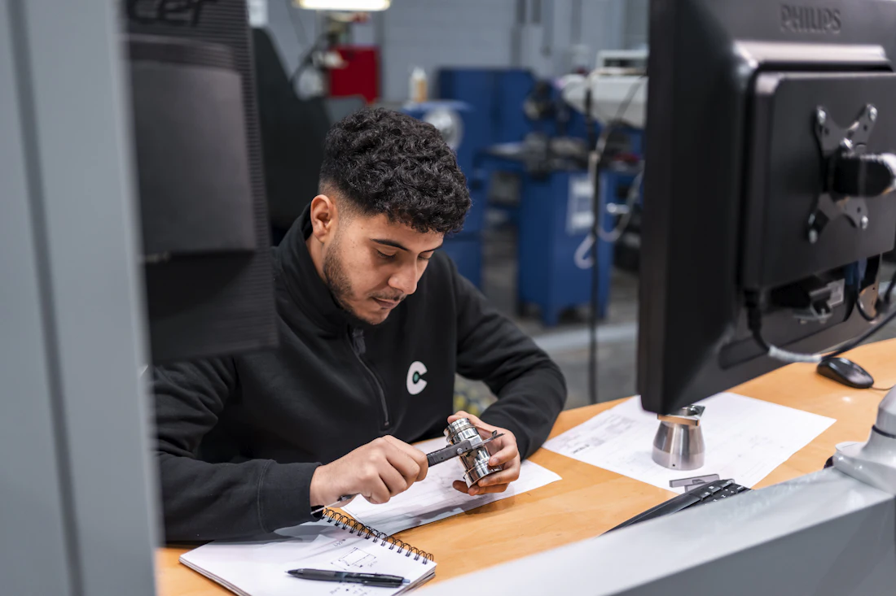
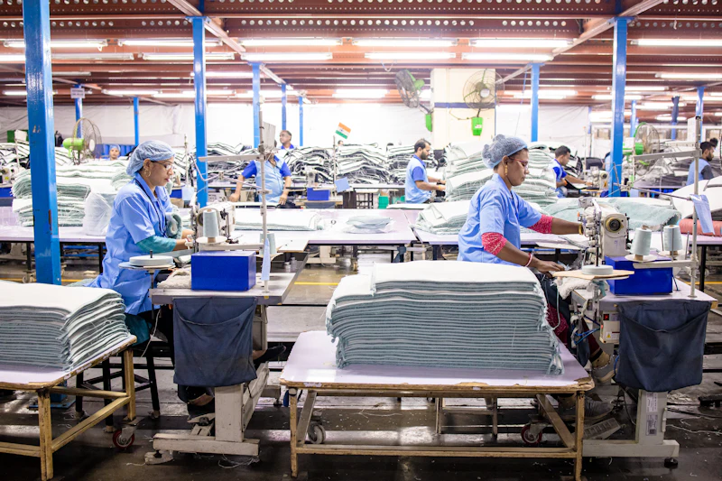

We find your factory in China. And make sure it delivers.
Verified suppliers, inspection at four production stages, and freight handled door-to-port — with one named contact from first brief to delivered goods.
Quality control
Four inspection points, not one
Most quality failures are caught too late to fix cheaply. Staging inspection across production is what keeps a defect from becoming a write-off.
Learn moreThe problem
Sourcing from China breaks in predictable ways
Almost every failed order we are called in to rescue went wrong for one of four reasons. None of them are bad luck.
You cannot verify who you are buying from
Platform badges and self-reported credentials are not verification. Trading companies present themselves as factories, and you find out after the deposit has cleared.
Quality is checked once, too late to fix
A single pre-shipment inspection tells you the order is wrong when it is already made and paid for. By then your options are a discount or a delay.
The quoted price is not the price you pay
Unit price is a fraction of landed cost. Freight, duties, inspection and port fees all arrive later, and a cheap EXW quote routinely lands dearer than a higher FOB one.
Nobody owns the problem when it goes wrong
A supplier, a forwarder and a customs broker each answer for their own leg. The gaps between them are where orders stall, and those gaps are yours to manage.
Services
Our Core Services
Three integrated service lines that take you from first shipment to full production.
Global Sourcing & Commodities Trading
Direct access to vetted Chinese manufacturers, quality control, and commodity procurement.
- Verified-supplier shortlisting
- Price benchmarking and negotiation
- Freight and customs documentation

Four inspection points, not one
Most quality failures are caught too late to fix cheaply. Staging inspection across production is what keeps a defect from becoming a write-off.
- Incoming materials check
- During-production inspection
- Pre-shipment and loading checks
Turnkey Factory Establishment
End-to-end consulting, machinery sourcing, assembly line planning, and factory setup.
- Site selection and feasibility
- Machinery sourcing
- Commissioning support
Process
How a sourcing project actually runs
Five stages from first call to delivered goods, with what happens at each and what you get out of it.
-
01 30 minutes
Discovery call
We establish what you are buying or building, at what volume, to what tolerance, and by when.
-
02 1–2 weeks
Supplier identification
We shortlist factories against your spec and verify they are what they claim to be.
-
03 2–4 weeks
Sampling and negotiation
Samples are produced and reviewed before terms are fixed.
-
04 Varies by product
Production and quality control
Production is monitored and inspected at defined checkpoints, not just at the end.
-
05 2–6 weeks in transit
Freight and customs
Goods are booked, documented, and cleared into your market.
Comparison
Direct sourcing vs. working with us
An honest comparison. Direct sourcing is genuinely the right call for some buyers — usually those with staff on the ground or an established supplier they already trust.
| Factor | Sourcing direct | With ENZ |
|---|---|---|
| Supplier verification | You rely on platform badges and self-reported credentials | Licence, capacity, and export history verified independently; site visits where the order justifies it |
| Time to first shipment | Often 3–6 months for a first-time buyer, most of it spent finding and vetting | Typically shorter, because the shortlist starts from suppliers already known to the category |
| Quality control | Usually a single pre-shipment check, if any | Staged: incoming materials, during production, pre-shipment, and loading |
| Language and time zone | Negotiating technical specs across a 6–8 hour gap and a language barrier | Handled locally in Mandarin, during Chinese business hours |
| When something goes wrong | Limited leverage from abroad once payment has been sent | Someone on the ground with an existing relationship and the ability to visit |
| Cost | No agency fee — but rework, delays, and freight errors are absorbed by you | A fee against typically lower landed cost and materially lower risk of a failed order |
Our commitments
What you can hold us to
Not claims about how good we are — specific things we do on every engagement, that you can check we did.
A reply within one business day
Every enquiry is read by a person and answered within one working day, not routed into an automated drip sequence.
One named point of contact
The same person owns your project from the first call to final delivery. No handoffs between departments, no re-explaining your brief.
A written scope before anything is signed
What we will do, what it costs and how long it takes, in writing, before you commit to anything.
Inspection reports you can actually read
Photographed findings against your specification at each inspection point, in plain language, not a pass/fail stamp.
Who you are dealing with
A note from the founder
Erick
Founder · Guangzhou, China
Most buyers who come to us have already been burned once. A supplier that turned out to be a trading company, an order that passed its only inspection and still arrived wrong, or a quote that looked cheap until the freight and duties landed.
None of that is bad luck. It happens because nobody on the buyer’s side is standing in the factory. So that is the job I built this business to do: verify who you are actually buying from, inspect the work while it can still be corrected, and stay the single point of contact until the goods are delivered.
Engagement
Three ways to work with us
Pick the amount of the process you want us to own. You can start small and move up — most clients do.
Single sourcing project
One product, one order.
Ideal for testing a new supplier relationship or a one-off procurement need, without committing to anything ongoing.
What's included
- Supplier shortlisting and verification
- Price benchmarking and negotiation support
- Pre-shipment inspection
Best for
First-time buyers, sample orders, seasonal purchases
Ongoing retainer
Repeat orders, one team.
Continuous sourcing and quality control across multiple SKUs and repeat order cycles, with a dedicated point of contact who already knows your specification.
What's included
- Everything in a single project
- Dedicated point of contact
- Staged QC across every order
Best for
Growing brands with recurring purchase cycles
Full factory partnership
Build production, not just orders.
End-to-end factory establishment, from site selection through commissioning, plus ongoing operational and sourcing support once you are running.
What's included
- Feasibility study and site selection
- Machinery sourcing and assembly-line planning
- Installation and commissioning support
Best for
Businesses localising production in a new market
Who we work with
Industries and markets we serve
Sector experience shapes what we check for. These are the categories we source in most often, and where we deliver.
Construction & building materials
Fixtures, fittings, tiles, sanitaryware, hardware, and finishing materials. Volume-heavy, freight-sensitive, and highly dependent on consistent tolerance across repeat orders.
Industrial equipment & machinery
Production machinery, spare parts, and assembly-line equipment. Long lead times and high consequence of error, so verification before shipment is critical.

Consumer goods & retail
Household products, packaging, textiles, and general merchandise. Typically the most quality-sensitive category, because defects surface as customer returns.
Commodities & raw materials
Copper, cobalt, and select agricultural goods. Contract structure and chain-of-custody documentation matter more here than in any other category.
Global Footprint
Learn moreOperational hubs: Guangzhou · Dar es Salaam · Nairobi · Kinshasa · London · New York
Getting started
What happens when you get in touch
No commitment at any point before the written scope. Here is the whole path from first message to work starting.
-
01
Tell us what you need
2 minutesProduct, rough volume, target market and your timeline. A paragraph is enough; you do not need a finished specification to start.
-
02
We reply within one business day
1 business dayA person reads it and comes back with either questions or an honest "this is not a fit for us". No drip sequence, no sales cadence.
-
03
A 30-minute scoping call
30 minutesWe work out what the project actually involves and whether we are the right people for it. Free, and with no obligation attached.
-
04
A written scope, then work begins
Before you commitWhat we will do, what it costs and how long it takes, in writing. Nothing starts until you have agreed to it.
Insights
Industry Insights
Navigating China's Supply Chain in 2026: A Buyer's Checklist
A practical framework for vetting suppliers, managing lead times, and protecting quality when sourcing from China.
Read more Factory SetupFactory Setup in East Africa: A Step-by-Step Guide
From site selection to first production run — what to plan for when establishing manufacturing capacity in East Africa.
Read more CommoditiesCommodity Trading Fundamentals: Copper and Cobalt
A primer on the procurement considerations that matter most when trading copper and cobalt across African and Chinese markets.
Read moreThe reference material worth reading before your first order — costs, payment, timelines, and the mistakes that cost the most. Read the buyer's guide
FAQ
Common questions
Straight answers to what buyers ask us most before getting started.
Tell us what you need to source
A 30-minute call, free, with no obligation attached. If your project is not a fit for us, we will say so on that call rather than quote for it.
- You get a reply within one business day — no automated drip sequence.
- We'll respond within 24h. No payment is required to request a consultation.